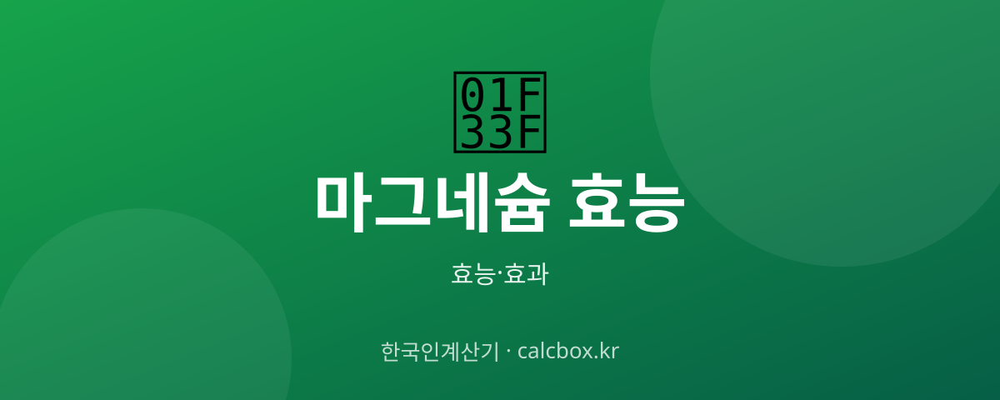

마그네슘 효능 — 눈떨림·근육경련·피로에 좋은 이유와 하루 권장량
눈밑이 파르르 떨릴 때 가장 먼저 떠오르는 영양소 마그네슘. 실제로 어떤 효능이 있고 하루에 얼마나 먹어야 하는지 정리했습니다.

마그네슘 개요 — 어떤 것인가요?
마그네슘은 체내 300가지 이상의 효소 반응에 관여하는 필수 미네랄입니다. 에너지 생성, 근육·신경 기능, 뼈 건강에 두루 관여하지만 현대인은 가공식품 섭취로 부족해지기 쉽습니다.
마그네슘 주요 효능·효과
- 눈밑떨림·근육경련 완화 — 마그네슘 부족의 대표 신호가 눈밑떨림과 종아리 쥐입니다. 보충 시 근육·신경 흥분이 안정됩니다.
- 피로 개선 — 에너지 대사(ATP 생성)에 꼭 필요해 만성 피로 관리에 활용됩니다.
- 신경 안정·수면 — 신경을 진정시켜 긴장 완화와 수면의 질 개선에 도움을 준다는 보고가 있습니다.
- 변비 완화 — 산화마그네슘 형태는 장으로 수분을 끌어와 변비 완화에 쓰입니다.
섭취·사용 방법과 권장량
성인 하루 권장량은 남성 약 350mg, 여성 약 280mg 수준입니다. 흡수가 좋은 구연산·글리시네이트 형태는 근육·수면 목적에, 산화마그네슘은 변비 목적에 흔히 쓰입니다.
주의사항·부작용
과다 섭취 시 설사가 가장 흔한 부작용입니다. 신장 기능이 저하된 사람은 마그네슘이 몸에 쌓일 수 있어 반드시 의사와 상담해야 합니다. 일부 항생제·골다공증약과 흡수 간섭이 있으니 시간 간격을 두세요.
자주 묻는 질문 (FAQ)
Q. 눈떨림에 마그네슘이 정말 효과 있나요?
눈밑떨림의 흔한 원인 중 하나가 마그네슘·전해질 부족과 피로입니다. 부족이 원인이라면 보충으로 개선될 수 있지만, 오래 지속되면 다른 원인일 수 있어 진료가 필요합니다.
Q. 마그네슘은 언제 먹는 게 좋나요?
신경 안정·수면 목적이면 저녁이나 취침 전, 변비 목적이면 공복이 흔히 권장됩니다. 설사가 생기면 용량을 줄이거나 글리시네이트 형태로 바꿔보세요.
Q. 칼슘과 마그네슘을 같이 먹어도 되나요?
두 미네랄은 서로 균형이 중요해 함께 든 복합 제품도 많습니다. 다만 고용량을 동시에 먹으면 흡수 경쟁이 있을 수 있어 제품 권장량을 지키는 것이 좋습니다.